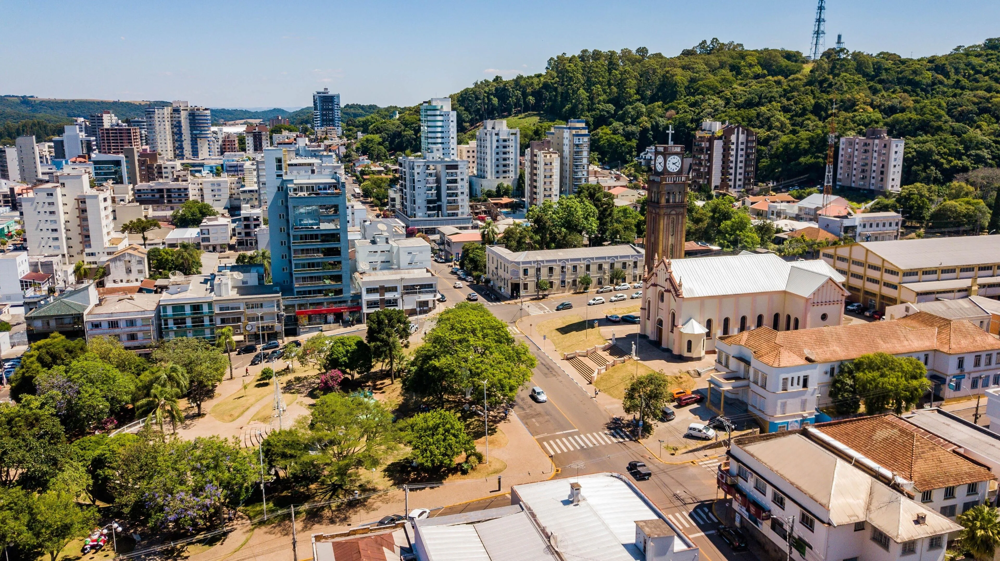

Município localizado na Zona da Mata de Minas Gerais, começou no
início do século XIX com a chegada de desbravadores e famílias
vindas de regiões mineradoras como Ouro Preto e Mariana em busca
de terras férteis e ouro de aluvião.
O primeiro núcleo familiar
fixou-se na região liderado por Lucas Pereira Franklin e sua esposa
Policena Miranda, que construíram um armazém e uma pequena capela
dedicada a São Sebastião, dando origem ao povoado chamado Capela Nova.
